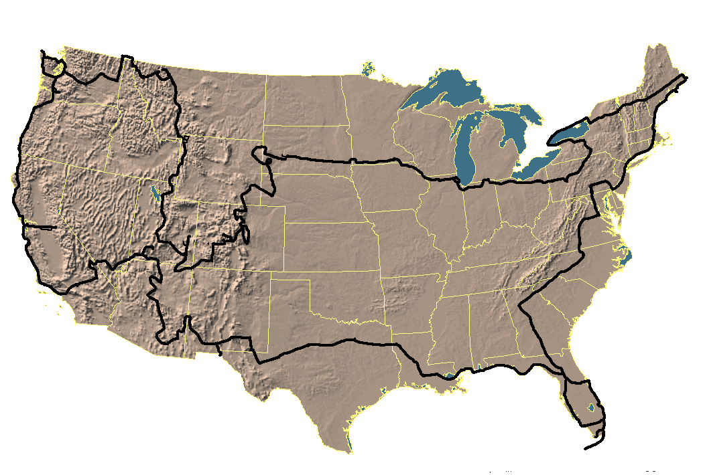

This page was frequently extended and edited back in 1996 — the story was never fully completed. What follows covers the first leg of the journey: Washington D.C. through Florida to Tampa. The rest of the 34,000 km adventure lives on in our memories, photos, and the places we describe elsewhere on this site.

Everything started with this guy, Klaus Bucka-Lassen, not getting anywhere with his final paper. He thought: "What about taking off a semester? What about visiting the US?" And off he went asking his younger brother Dirk if he wanted to come along.
But Dirk said "no." :-(
After Dirk had thought about the offer for a couple of days, he decided that he actually wanted to go. So Dirk told Klaus about the change of plans, and they started to prepare for The BIG Trip.
About two months before departure — sometime around the beginning of February 1995 — the guys sat down and wrote a letter which they posted onto the Usenet newsgroups rec.motorcycles and alt.travel. The posting was called "What to see and what motorcycles to buy in the US".
It didn't take long before tons and tons of replies came in. A lot of friendly people answered all the questions they had asked. Most of them offered more help if needed — and boy, did they exploit those people. :-)
After a couple of letters sent back and forth, people started inviting the two Danes to visit them if they should be passing through.
On March 14th their parents drove them to the train station, from where they would take the train to Hamburg, Germany. The next day they would fly from Fuhlsbüttel/Hamburg via Heathrow/London to Dulles/Washington D.C.
There they were picked up by David Lee, a guy they had met on the internet about a week before departure. It would turn out that Dave's address would become their American headquarters.
When they had bought the bikes, the trouble started:
Then they found out they couldn't even take the written test, because they had a tourist visa and not a student visa. So what now?
They phoned insurance company after insurance company until they found one willing to insure foreigners. The prices were of course twice the ordinary rates :-( but what else could they do?
With the insurance in their pocket they went to the dealer and got their temporary tags. Next stop: the DMV to get "real" license plates.
Now they were ready to HIT THE ROAD.
Their first trip was a one-day ride to West Virginia and back. Just to get to know their bikes better, and of course for the sheer joy of it. With them came Dave and one of his friends, Andy. Dave & Andy showed them some great roads.
On the 22nd of March, they said goodbye to Dave and his wife Betsy for the next five months.
The first day was horrible. Klaus ran out of gas because his fuel warning light didn't work. After riding the beautiful Skyline Drive and heading for Chapel Hill — their next overnight stop — they were pulled over by the police. SPEEDING. :-(
Klaus told the officer that they had just started their trip and still hadn't adjusted to miles, since they normally calculated in kilometers. The officer understood :-D and let them go.
But the day wasn't over yet! At eight o'clock in the evening, just after they had filled up their bikes, Klaus discovered a flat tire. What now? Luckily the person at the gas station knew somebody who could fix it. They got to Chapel Hill shortly before midnight — totally bushed.
But having a start like that also has some positive sides: IT COULD ONLY GET BETTER.
And it did!
After Chapel Hill our next stop was Atlanta, our first big city with a "real" (compared to D.C.) skyline. It was breathtaking. The sun was just setting as we drove downtown. The skyline looked as if it was glowing; everything had a reddish touch.
Todd, the guy we would stay with for the night, had some of his friends over. All at least 6'3" in height and 6'3" in width (no offense). Just typical football players. :-) Even before we had entered Todd's apartment (36th floor, downtown Atlanta) we had a beer in our hands. Todd was going on a world tour himself, so his buddies had helped him move his stuff that day.
Later that night, after a pizza and a couple of beers, we went out — which didn't make us any more sober. :)
The next morning when we woke up, breakfast was waiting for us. McDonald's had provided coffee (not too hot), hash browns and some muffins — mmmh, great after a hangover. As it turned out, this was the first and only time we had fast food for breakfast.
That day we took a look at Atlanta's sights. In the afternoon we had to find another place to stay, since Todd and his wife Karen were going to Toronto. So we went to one of Todd's students: Bill Neus!
As we drove into the street we saw some guys dancing, a beer in one hand (seems to be an Atlantan tradition) and the beat of the music in the other. Just like the day before, our hosts were unbelievably open and friendly. These guys really showed us how to party.
At night we went to this "dance bar" called Baja (pronounced "baha") where the female employees wear bikinis. And boy, did they have a body. Definitely a place we can recommend. :)
All in all, Atlanta (or Hotlanta as we call it) showed us how you live the life of a college football player-student in the US: PARTY! P-A-R-T-why? — 'cause we gotta.
We were now heading for Florida, where we first would take a look at Orlando (Disney World, Universal Studios) and then head for Miami to visit a friend from Germany. On the way to Miami we took a quick look at Cape Canaveral.
In Miami (Key Biscayne) we stayed a few days. It was a great base for day trips — the Everglades, Key West, the beaches. The beaches, though, were the main attraction.
Key West sunsets are unbelievably beautiful. We understand why Hemingway liked this place so much. It's unique. Another thing one absolutely has to do is go snorkeling. It's amazing how colorful fish can be — and so many different kinds.
After Key West we returned to Miami, relaxed a bit, then continued toward Tampa. On the way we took a route through the northern part of the Everglades. It was the first time we drove slower than the speed limit — scouting for alligators, which we hadn't seen much of yet.
Somewhere on the road we saw a sign: Hovercrafts. Reason enough to stop and ask for the price. Half an hour later we were sitting in one, enjoying the wind in our hair. Damn, those things are loud — but fun!
It's funny: in Denmark an alligator is an exotic animal; in Florida you see them lying at the side of the road.
As it was getting dark we saw a BIG black cloud getting closer. It didn't take long before we were in the middle of our first encounter with rain on the road. Since we were on an Interstate we couldn't just pull over and put our rain gear on, so we waited for the next exit. That was time enough to get thoroughly soaked. After some trouble with an officer at the rest area, we put on our rain gear and continued to Tampa.
In Tampa we were supposed to meet Dan and company — some of the guys and girls we had met in Atlanta. The question was: would they still be awake? Would we find his place? Would anybody be home?
As we walked up to the door, we saw a sign saying: "Cowboy & D-man" — our synonyms from Atlanta. The door opened and we were pulled inside. Party time. Somehow we had this strange feeling of déjà vu.
Inside we were introduced to new faces. After changing clothes we went out to some bar. Half an hour later the bartender said "last call" and Klaus & Dan went up to the bar to get beer. Unfortunately, Klaus didn't know that Dan was already getting beer and vice versa, which resulted in 7 pitchers of beer. Fifteen minutes to inhale it — oops!
We all tried to do our best, but Klaus did too much of it. :-( Outside the bar he had to get rid of some of the beer. :-) Shit happens.
Back at Dan's place the party continued late into the night. The next day went pretty similar. Unbelievable how those college dudes can drink. Beer in the morning, beer in the afternoon, and beer in the evening.
The story was never finished beyond Tampa. The remaining months of the trip — through the Deep South, Texas, the Desert Southwest, California, the Pacific Northwest, the Rocky Mountains, the Great Plains, the Midwest, and up the East Coast — were lived but never written down in full. Head over to What to See and the Photo Gallery for glimpses of the rest of the journey.